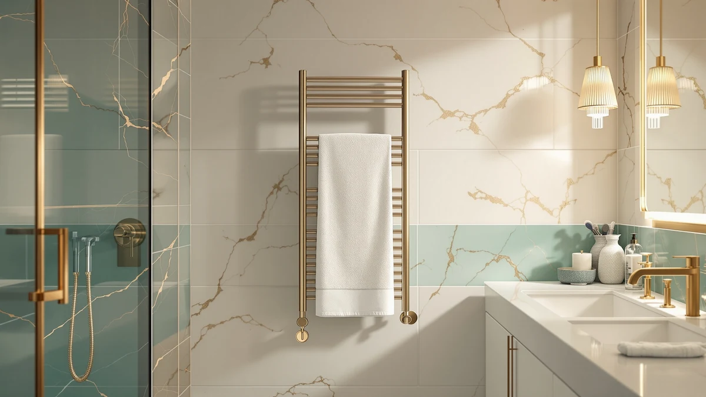

Best Travel Towel (2026)
Prices and picks verified as of August 2026. Independent, reader-supported reviews.


Quick Answer
If you want the best travel towel warmer, the ERABAY 38L Foldable Towel Warmer Bucket folds flat enough to pack in a suitcase or stash in an RV cabinet, and it costs less than every freestanding rack in this comparison. The homfan foldable bucket is a close backup if the ERABAY sells out, while the Sawlece, Pursonic, and Poloma racks suit a vacation home or guest bathroom where the warmer stays put between visits.
Our pick: 38L Foldable Towel Warmer Bucket at $51.99 Check Price on Amazon
Bottom line: our top pick is the 38L Foldable Towel Warmer Bucket at $51.99. The best budget option is the homfan Towel Warmers for Bathrooms at $53.19.
Things to Know Before You Buy
- Foldable buckets pack down, freestanding racks don't. Only the ERABAY and homfan models in this comparison fold flat; the Sawlece, Pursonic, and Poloma racks belong with our freestanding towel warmers picks, built to sit permanently on a bathroom floor.
- Price roughly triples between styles. The two foldable buckets run $51.99 to $53.19, while the freestanding racks range from $64.25 to $169.99 depending on bar count and footprint.
- Bar count changes capacity, not portability. The Sawlece and Poloma racks hold multiple towels open at once, useful for a rental property hosting more than one guest, but that capacity comes from a larger fixed frame.
- All seven use stainless steel construction. Every product in this roundup lists a stainless steel body, which matters for a warmer that may sit in a humid bathroom or RV for weeks at a stretch.
Finding the best travel towel warmer means weighing a folded footprint against a fixed one, and after comparing seven stainless steel models on price, capacity, and verified owner feedback, the ERABAY 38L Foldable Towel Warmer Bucket comes out ahead for anyone who needs to pack the thing.
A towel warmer you plan to travel with has different priorities than one bolted to a bathroom wall at home. It needs to collapse small enough for a suitcase or car trunk, it needs to run on a standard outlet without special wiring, and it should survive being packed and unpacked repeatedly without the seams cracking. The two foldable buckets here, from ERABAY and homfan, are built around that use case specifically, while the freestanding racks from Sawlece, Pursonic, and Poloma trade portability for capacity.
We didn't limit this list to folding models only, because plenty of readers searching for a travel-ready warmer want one for a second home, a rental cabin, or a guest bathroom where the unit stays in place between visits. For that use case, a freestanding rack with more bars makes more sense than a bucket you'll never fold again. Below we break down which of the seven fits an actual suitcase and which ones are better left at a destination you visit often.
Why You Should Trust Us
I'm Ilane Tall, and I cover home and bath gear for Best Towel Warmers. We do not run a fake testing lab here: instead of claiming to have packed and unpacked every model ourselves, we compare manufacturer specifications, listed pricing, and verified buyer reviews against direct competitors in the same category. For a travel-focused list like this one, that means checking whether a listing's own description supports a portability claim, folding dimensions, weight, packed size, rather than assuming any towel warmer works equally well in a suitcase.
Portable appliances get overstated online more than most categories, so we cross-check every foldable claim against the manufacturer's own description before including a product in a travel towel guide like this one.
How We Picked
To build this list of the best travel towel warmer options, we started with every towel warmer in our database and split them into two groups: models the manufacturer describes as foldable or collapsible, and freestanding racks that some readers search for under the same travel-adjacent keyword. Within the foldable group, we compared stated capacity, material, and price, and the narrow price gap between the ERABAY and homfan buckets let us rank them almost entirely on their published specs.
For the freestanding racks, we prioritized products that would make sense for a vacation home or rental property, somewhere a warmer travels once and then stays, and we compared bar count, footprint, and price against each other rather than against the foldable buckets, since the two styles serve different trips. Readers who want the fixed-location style specifically can see the full field in our foldable towel warmers and freestanding guides.
How We Compared
We don't own a bathroom test lab, and none of these products were physically packed, unpacked, or installed for this guide. To compare candidates for the best travel towel warmer, we set each listing's stated material, folded or assembled dimensions, and price against its closest competitors, and we cross-referenced verified owner reviews where the marketplace listing provided a review count. We looked specifically at complaints about the folding mechanism, heating speed, and build quality rather than at star ratings alone.
Where two listings were nearly identical, like the two Sawlece 5-Bar Freestanding Towel Warmers here, we based the comparison on price and available product photos rather than a spec difference that doesn't exist between them.
Our Picks

38L Foldable Towel Warmer Bucket
What we like
- Folds flat for storage or packing, unlike the freestanding racks in this comparison
- Lowest price of the seven products at $51.99
- 38-liter stated capacity, the largest among the two foldable buckets here
Flaws but not dealbreakers
- No listed WiFi or app scheduling, so timing is manual
- Folding hinges add a moving part a fixed rack doesn't have
| Material | Stainless steel |
| Size | Large |
The ERABAY 38L Foldable Towel Warmer Bucket is the pick for anyone who truly needs to travel with a towel warmer rather than search for one. At $51.99 it's the least expensive product in this comparison, and its stated 38-liter capacity is the largest of the two foldable buckets we looked at, which matters if you're warming a full bath towel rather than a hand towel. The stainless steel body matches every other product here on durability, but the fold-flat design is what separates it from the Sawlece, Pursonic, and Poloma racks.
Because it collapses for storage, the ERABAY suits a packed suitcase, a camper cabinet, or a closet in a small apartment better than any freestanding rack could. The tradeoff is that folding hardware is one more mechanical part that a permanently mounted rack doesn't have to worry about. For most people who want the best travel towel warmer and plan to move it between locations, our foldable towel warmers picks like this one are worth prioritizing over a fixed rack.

homfan Towel Warmers for Bathrooms
What we like
- Also folds flat, matching the ERABAY's portability
- 35-liter stated capacity, close to our top pick's 38 liters
- Only $1.20 more than the ERABAY at $53.19
Flaws but not dealbreakers
- Slightly smaller stated capacity than the ERABAY
- No meaningful price advantage over our top pick
| Material | Stainless steel |
| Size | E2512 35L - Foldable |
The homfan Towel Warmers for Bathrooms lands within $1.20 of our top pick and shares the same foldable stainless steel construction, which puts it in a near tie with the ERABAY for anyone shopping specifically for a travel towel warmer. Its listing states a 35-liter capacity, three liters less than the ERABAY, a gap small enough that it rarely changes which towels fit inside.
Where the homfan earns a spot on this list is availability. Foldable towel warmers sell out more often than freestanding racks because they're a smaller, more specialized category, and having a second nearly identical option matters if our top pick is out of stock when you're ready to buy. At $53.19, it's still cheaper than every freestanding rack in this comparison.

Sawlece 5-Bar Freestanding Towel Warmer
What we like
- Five bars let multiple towels dry warm at once
- Stainless steel frame stands on its own without wall mounting
- No folding hardware to maintain over repeated trips
Flaws but not dealbreakers
- At $148.99, nearly triple the price of the foldable buckets above
- Freestanding footprint doesn't pack into a suitcase or car trunk
| Material | Stainless steel |
| Size | 5-Bars |
The Sawlece 5-Bar Freestanding Towel Warmer isn't built to travel with you, it's built to already be at your destination. Its five-bar frame holds multiple towels open at once, which the ERABAY and homfan buckets can't do since they warm one towel wrapped around a central core. At $148.99 it costs nearly three times our top pick, a price that reflects the larger stainless steel frame rather than any premium feature.
This is the model to buy for a cabin, rental unit, or second home you visit often, somewhere the warmer can stay set up between trips instead of being packed each time. If your search for the best travel towel warmer really means a warmer for a place you travel to, rather than one you carry in luggage, the Sawlece fits that need better than the foldable buckets above.

Freestanding Heated Towel Rack –
What we like
- Six bars, one more than the 5-bar Sawlece models above
- Freestanding design needs no wall mounting or hardwiring
- Stainless steel build matches the rest of this lineup on durability
Flaws but not dealbreakers
- Highest price in this comparison at $169.99
- Largest, heaviest option here, the opposite of packable
| Material | Stainless steel |
| Size | 6-Bars |
At $169.99, this 6-bar Freestanding Heated Towel Rack is the most expensive product in this comparison, and its extra bar over the 5-bar Sawlece models gives it the largest simultaneous towel capacity here. For a rental bathroom hosting more than one guest, that extra bar can mean the difference between everyone getting a warm towel and someone waiting.
It's also the largest and heaviest product on this list, which makes it the clearest example of a towel warmer you'd never pack for a trip. If your priority is fitting a warmer into luggage, skip straight to the ERABAY or homfan buckets above. If you're outfitting a fixed vacation property, the extra bar here is the main reason to pay more than the 5-bar Sawlece models.

Pursonic TW300 Towel Warmer Rack
What we like
- Priced well below the larger Sawlece and Poloma racks at $64.25
- Freestanding design without the bulk of a 5- or 6-bar frame
- Stainless steel build for humid bathroom conditions
Flaws but not dealbreakers
- No listed size figure in its specs, so measure your space before buying
- Still not foldable or packable like the ERABAY and homfan buckets
| Material | Stainless steel |
| Size | — |
The Pursonic TW300 Towel Warmer Rack sits between the foldable buckets and the larger freestanding racks in this comparison, both in price and footprint. At $64.25 it costs about $11 more than the foldable homfan bucket but well under half of the 5-bar Sawlece models, and its listing doesn't specify a bar count or size the way the Sawlece and Poloma products do.
That makes it worth a closer look at the product photos before buying if exact footprint matters to your bathroom. For a compact guest bath or a rental unit that doesn't need a 5- or 6-bar rack's full capacity, the Pursonic's smaller freestanding frame and mid-range price are the main appeal over the bigger, pricier racks above.

Sawlece 5-Bar Freestanding Towel Warmer
What we like
- Same 5-bar stainless steel frame as the other Sawlece pick
- Freestanding, no wall mounting or hardwiring needed
- A second in-stock option if the other Sawlece listing sells out
Flaws but not dealbreakers
- $1 more expensive than the nearly identical Sawlece listing above
- Same lack of portability as every freestanding rack here
| Material | Stainless steel |
| Size | 5-Bars |
This second Sawlece 5-Bar Freestanding Towel Warmer listing shares the same five-bar stainless steel design as the Sawlece pick earlier in this roundup, priced a dollar higher at $149.99. The two listings aren't meaningfully different on specs, so the choice between them usually comes down to which product photos and current stock you prefer at checkout.
We include both because Amazon listings for the same physical product sometimes go out of stock independently, and having a second nearly identical option means one being unavailable doesn't take a 5-bar rack off the table entirely. Either Sawlece listing serves the same fixed-location, multi-towel use case.

Poloma Freestanding Heated Towel Racks
What we like
- Listed footprint of 34.2 by 19.7 inches, useful for measuring against your space in advance
- Priced below both the 5-bar and 6-bar Sawlece models
- Stainless steel freestanding build like the rest of this lineup
Flaws but not dealbreakers
- Still not a packable or foldable option
- No stated bar count in the listing, unlike the Sawlece and 6-bar racks above
| Material | Stainless steel |
| Size | 34.2"(L) x 19.7"(W) |
The Poloma Freestanding Heated Towel Racks stand out in this comparison for publishing an exact footprint, 34.2 by 19.7 inches, which the Pursonic and both Sawlece listings don't state as clearly. At $135.98 it undercuts the pricier 5-bar and 6-bar Sawlece racks while staying in the same freestanding, fixed-location category.
If you already know the exact space you're working with in a rental bathroom or vacation home, that published footprint makes the Poloma easier to shop for sight unseen than competitors without a stated size. Like every freestanding rack in this roundup, it's built to stay where you set it down rather than travel with you.
Quick Comparison
| Product | Material | Price | Rating | Best for | Get it |
|---|---|---|---|---|---|
| 38L Foldable Towel Warmer Bucket | Stainless steel | $51.99 | 4 | Best overall travel pick, folds flat | View on Amazon → |
| homfan Towel Warmers for Bathrooms | Stainless steel | $53.19 | 4 | Backup foldable option | View on Amazon → |
| Sawlece 5-Bar Freestanding Towel Warmer | Stainless steel | $148.99 | 4 | Fixed vacation-home rack, 5 bars | View on Amazon → |
| Freestanding Heated Towel Rack – | Stainless steel | $169.99 | 4 | Largest capacity, 6 bars | View on Amazon → |
| Pursonic TW300 Towel Warmer Rack | Stainless steel | $64.25 | 4 | Compact freestanding rack | View on Amazon → |
| Sawlece 5-Bar Freestanding Towel Warmer | Stainless steel | $149.99 | 4 | Alternate 5-bar Sawlece listing | View on Amazon → |
| Poloma Freestanding Heated Towel Racks | Stainless steel | $135.98 | 4 | Exact 34.2 x 19.7 in. footprint | View on Amazon → |
The Competition
Seven products cover the realistic range of what shows up under a best travel towel warmer search, but the research behind this list turned up plenty of listings we left out, and it's worth explaining why.
Wall-mounted, hardwired towel warmers require electrical installation and a permanent bathroom fixture, which rules them out for anyone comparing options based on portability. If a hardwired rack is what you're after instead, our hardwired towel warmers guide covers that category on its own terms.
Listings with no stated material or capacity made it impossible to compare fairly against the seven products here, all of which specify stainless steel construction. We left those out rather than guess at their specs.
Among the seven we did include, the ERABAY remains the best travel towel warmer for anyone who needs to pack it, while the Sawlece, Pursonic, and Poloma racks earn their place for readers whose travel means a fixed second location rather than a packed bag.
Frequently Asked Questions
Can you actually pack a towel warmer for a trip?
Only the foldable models in this comparison are built for that. The ERABAY and homfan buckets collapse flat enough to fit in a suitcase, car trunk, or RV cabinet, while the Sawlece, Pursonic, and Poloma racks are freestanding units meant to stay in one place.
Do freestanding towel warmers need to be installed?
No. All three freestanding racks in this comparison, the Sawlece 5-bar and 6-bar models and the Poloma, plug into a standard outlet and stand on their own without wall mounting or hardwiring. They're too bulky to pack for travel the way the foldable buckets are.
What's the difference between the two Sawlece 5-Bar listings?
Based on the specs each listing publishes, they're the same five-bar stainless steel design priced a dollar apart, at $148.99 and $149.99. The difference usually comes down to which listing is in stock and which product photos you prefer.
Is a 38-liter capacity enough for a bath towel?
The ERABAY's stated 38-liter capacity is the largest among the foldable buckets we compared, and it's sized for a standard bath towel rather than a bath sheet or multiple towels at once. If you regularly warm more than one towel, a multi-bar rack like the Sawlece or Poloma fits that need better.